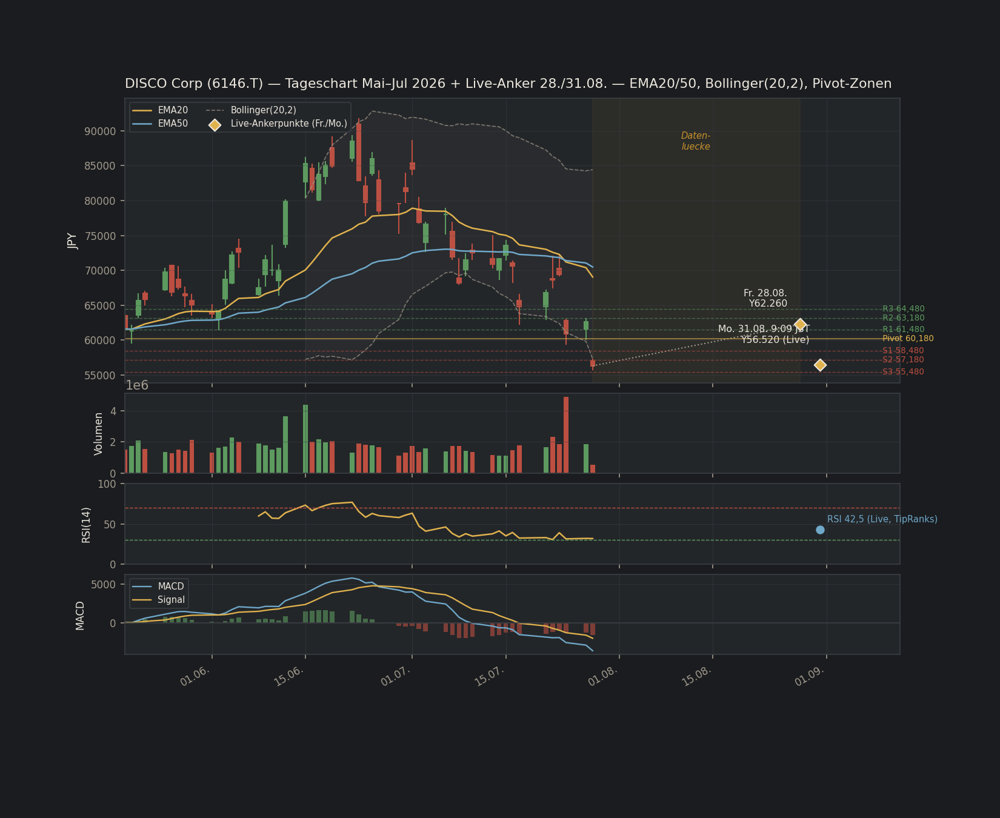

| Kennzahl | Quick-Filter | Full Deep Dive | Konsequenz |
|---|---|---|---|
| Piotroski F-Score | N/V, konservativ Fail | 4/9 (Ziel ≥7) | Bestätigt Fail |
| Capex/Umsatz | N/V, "vermutl. okay" | ≈10,5% (Ziel ≤5%) | Korrektur ↓ verifiziert Fail |
| CCC | N/V, "vermutl. >30T" | ≈373,8 Tage (Ziel <30T) | Korrektur ↓↓ verifiziert Fail |
Zwei der drei "wahrscheinlich unproblematisch"-Annahmen aus dem Quick-Filter waren falsch — DNA-Quote bleibt zahlenmäßig K 4/5 / E 4/6, ist jetzt aber verifiziert statt vermutet. Konfidenz bleibt trotzdem 🔴 NIEDRIG: alle 5 K-Kriterien sind [TRAINING]-Sekundärquelle statt Primärfiling (Regel "≥2 K TRAINING → 🔴", identisch zum NOW-Präzedenzfall).
ROIC-Trend 3J stabil +1 · Reinvest.-Rendite entfällt (Datenlücke) · Buybacks entfällt (keine Rückkäufe) · M&A entfällt (kein Track-Record) · Guidance-Hit-Rate entfällt (Datenlücke) · Insider-Ownership 2,07% 0 · Verwässerung +0,41% YoY 0
Score: 1/3 (evaluierbar) → ⚠ RISIKO-Band. Netto-Cash bleibt stark, aber Kapitalallokation ist neutral-passiv statt aktiv aktionärsfreundlich — passt nicht zum "Elite-Compounder"-Bild.
Jahr 1/2/3 Fälligkeit: ¥0 / ¥0 / ¥0 — trivial, keine Schulden. Liquiditätspuffer: NM ✅ · Zins-Coverage: NM (Netto-Zinsertrag) ✅
URTEIL: 🟢 NIEDRIG
Preissetzungsmacht Ja (Bruttomarge 68,7-69,7% vs. KLA ~60%) · Switching Cost Belegt (Dicing/Grinding/Polishing-Ökosystem) · Marktanteil-Trend Stabil, mit Vorbehalt (~50%, 4x Wettbewerber, aber GL-Tech-China-Risiko)
3/3 anwendbar → 🟢 STARK. Moat-Decay: STABIL, kein Flag.
Beta-Klassifizierung uneindeutig (Tendenz 🔴 High Risk, gestützt durch beobachtete ~9,3% Wochenvolatilität + 2× zweistellige Tagesbewegung) · China-Konzentration (~35% Umsatz FY24) + GL-Tech als Beobachtungspunkt · Litigation/Runway: ✅ unkritisch
| Szenario | FV/Aktie | ≈EUR | Δ vs. ¥62.260 | Δ vs. ¥56.520 (live) | TV-Anteil EV |
|---|---|---|---|---|---|
| Beta hoch (GuruFocus 1,6875) · WACC 11,67% | |||||
| Bear | ¥14.451 | ≈78,01€ | −76,8% | −74,4% | 63,4% |
| Base | ¥23.719 | ≈128,05€ | −61,9% | −58,0% | 73,2% |
| Bull | ¥25.264 | ≈136,39€ | −59,4% | −55,3% | 75,0% |
| Beta niedrig (stockanalysis.com 1,02) · WACC 8,21% | |||||
| Bear | ¥21.977 | ≈118,64€ | −64,7% | −61,1% | 75,4% |
| Base | ¥38.932 | ≈210,17€ | −37,5% | −31,1% | 82,8% |
| Bull | ¥41.939 | ≈226,41€ | −32,6% | −25,8% | 84,1% |

Candlesticks + EMA20/50 + Bollinger(20,2) · Volumen · RSI(14) · MACD, ~50 Handelstage (19.05.-28.07.) plus Live-Ankerpunkte Fr./Mo. Datenlücke Ende Juli-Ende August transparent markiert statt erfunden ("flag, don't fabricate"). Bärische Struktur auf allen MAs, RSI 42,5, MACD negativ — keine Bodenbildung erkennbar. Einstiegszone 1 ¥57,0-58,5k (≈307-316€) fast erreicht; Zone 2 ¥50k (≈270€, = Abstauber-Limit) bleibt stärkeres Signal.
| Aspekt | Quick-Filter | Full Deep Dive |
|---|---|---|
| DCF | Nicht gerechnet | Gerechnet — Beta-Konflikt als zentrales Ergebnis (¥14.451-¥41.939) |
| Management-Score | Nicht berechnet | 1/3 evaluierbar, ⚠ Risiko-Band |
| Debt-Maturity | Nicht berechnet | 🟢 NIEDRIG (trivial) |
| Konfidenz | 🔴 (wegen N/V-Lücken) | 🔴 unverändert (jetzt wegen K-TRAINING-Quote) |
| Reaper Score / Anker | 6/10 (Anker "eigtl. 8-9") | 6/10 (Anker jetzt nüchterner: "eigtl. 6-7") |
| Rating | BEOBACHTEN | BEOBACHTEN (unverändert, jetzt evidenzbasiert) |
1. Bei Beta 1,02 nur moderat überbewertet (−31% vs. Live) — Reverse-DCF-Wachstum liegt sogar unter Analysten-Konsens. 2. Management-Score (1/3, keine Rückkäufe trotz Netto-Cash) widerspricht dem "Elite-Compounder"-Bild. 3. Markt gewichtet Zyklus-Fortsetzung (KI-Supercycle) evtl. höher, als eine 20%-gedeckelte 5J-DCF-Methodik abbilden kann.